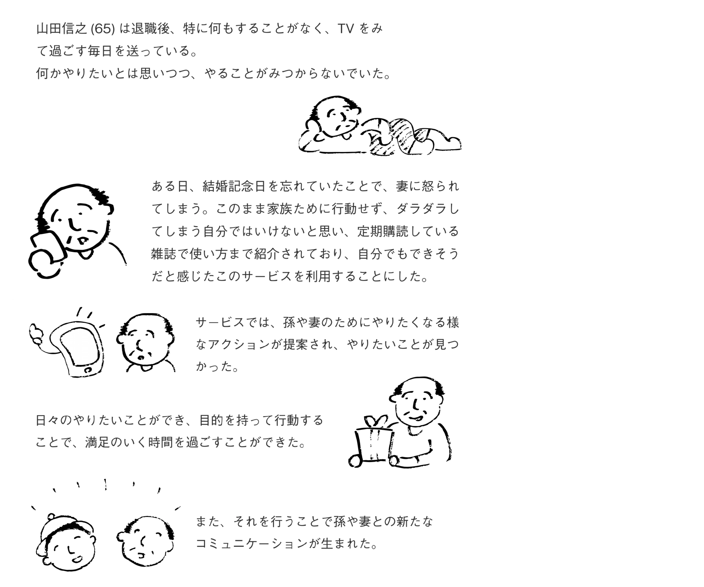

概要
定年後の元気なおじさん・おばさんが時間を有効活用できるサービス
時間を有効活用とは
○○のために時間を使うという「目的」を持つことで、それを達成するまでの工程や達成する満足感に繋がる。
満足した時間を過ごしたことは過ごしたことは、時間を有効に使ったことになると定義しました。
第二位受賞
期間
2019年8月30日〜9月1日 (３日間)
使用ツール
illustrator
html
css
javascript
ペルソナ
退職後特にやることもなく時間を持て余している田舎のおじいちゃん、山田信之さん65歳。
四国に住んでいて、娘夫婦が東京に住んでおり孫もいる。
日中は特にやることもなくテレビを見て過ごしている。
孫には年に１、２回しか会えず、寂しい思いをしている。
シナリオ

コンセプト
サービスコンセプト
家族のために何かをしたくなるサービス
デザインコンセプト
喜ぶ相手を想像できるデザイン
コミュニケーションを促し、行動したことに対する喜ぶ相手の姿がきちんと伝わる
カスタマージャーニーマップ
青色：おじいちゃん
黄色：孫
ベネフィット
個人的にやることとの違い
・とりあえずやるから裏付けのある行動に変化する
・やることの選択肢が広がる
・一人では気づけない発見がある
現実のコミュニケーションの変化
・家内での会話のネタが増える
・妻と一緒にやることができ、一緒に過ごす時間の満足度が上がる
・遠方の家族との面識が増すことで、コミュニケーションが増える
・帰省時の満足度が上がり、帰省日数が増加する
UIデザイン